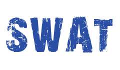
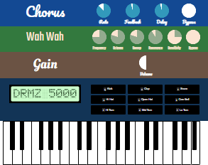
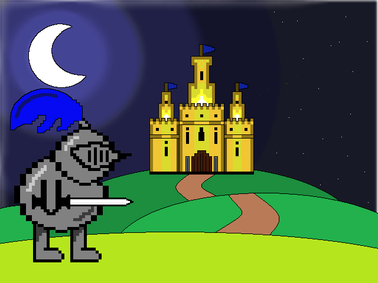
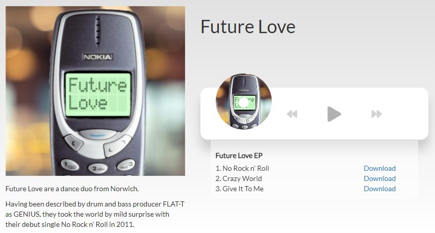
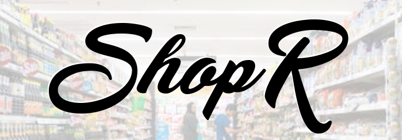
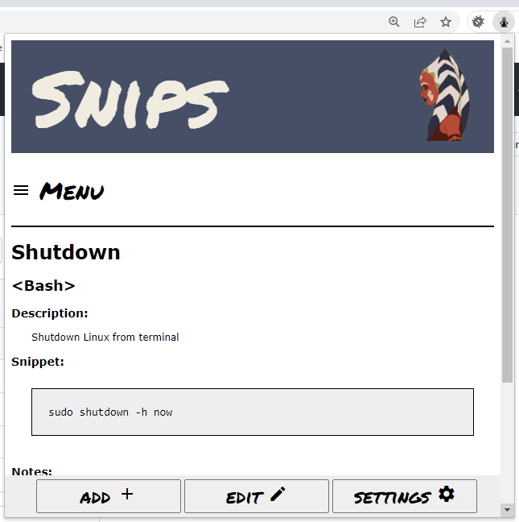
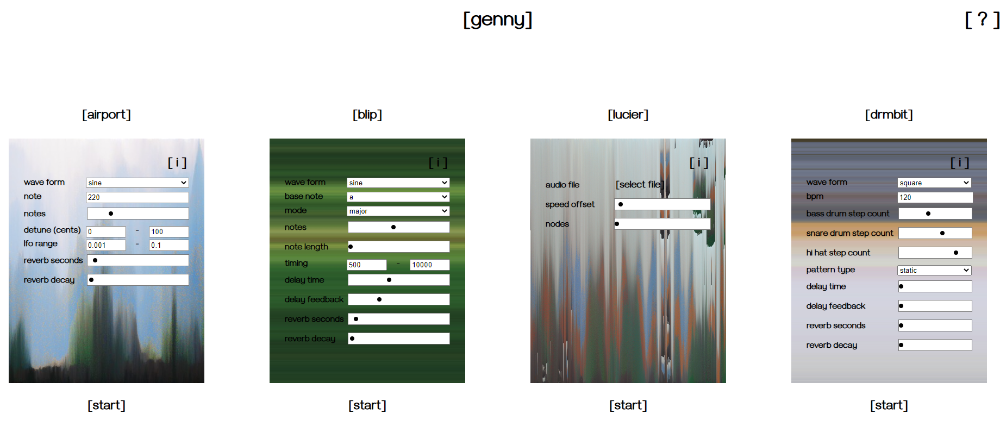
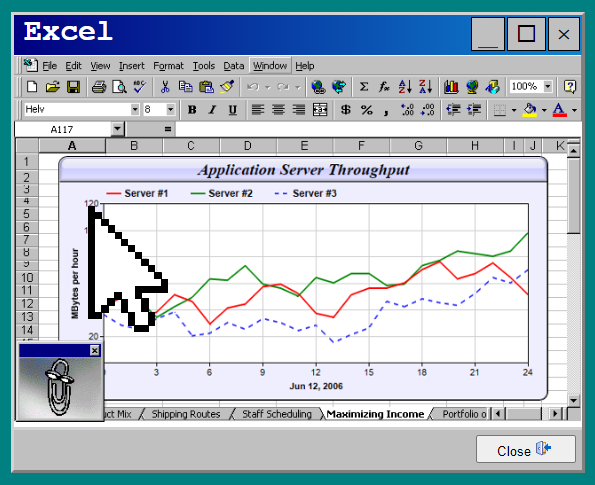

Projects

SWAT
A Simple-Web-and-API-Template
SWAT is a web template for getting simple sites up and running quickly with PHP.
SWAT includes a log viewer, login functionality, custom 404 pages and an API suite.
Source


Castle Quilldore
My first ever website 😢...
Written in 2012, Castle Quilldore is an RPG designed to utilise a lot of new (for 2012) features introduced in HTML5.
Help the brave knight Drakhelm find his way through Castle Quilldore to battle the evil King Krillarg. An HTML5 based create your own adventure game for all ages.
Demo Source



Snips
A Chrome extension to help save handy code snippets.
Allows a user to add and categorise handy code snippets for when you just can't remember how to get the local IP address on a Linux terminal...
Source

